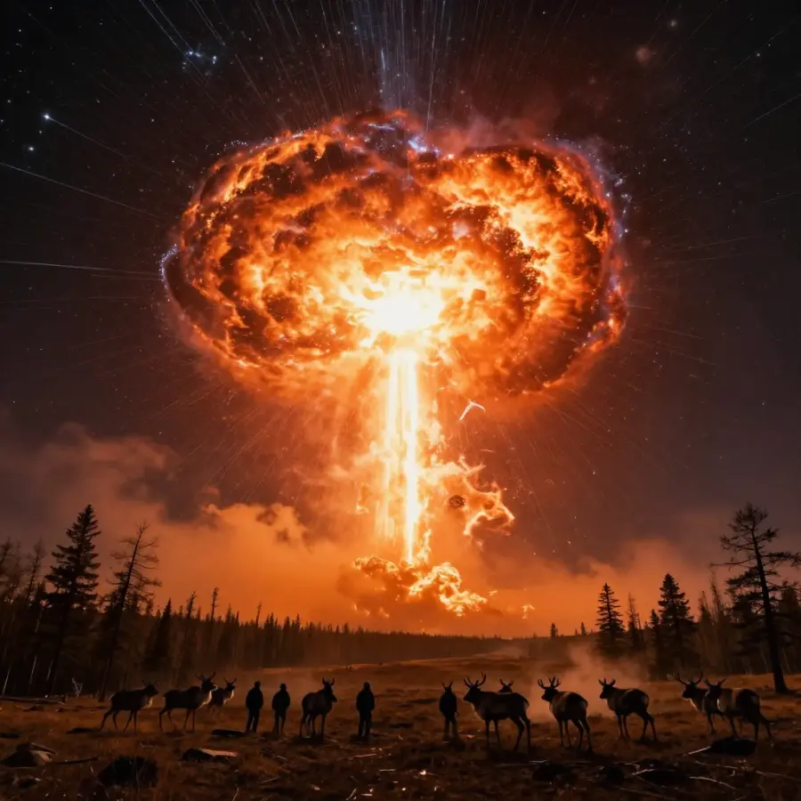
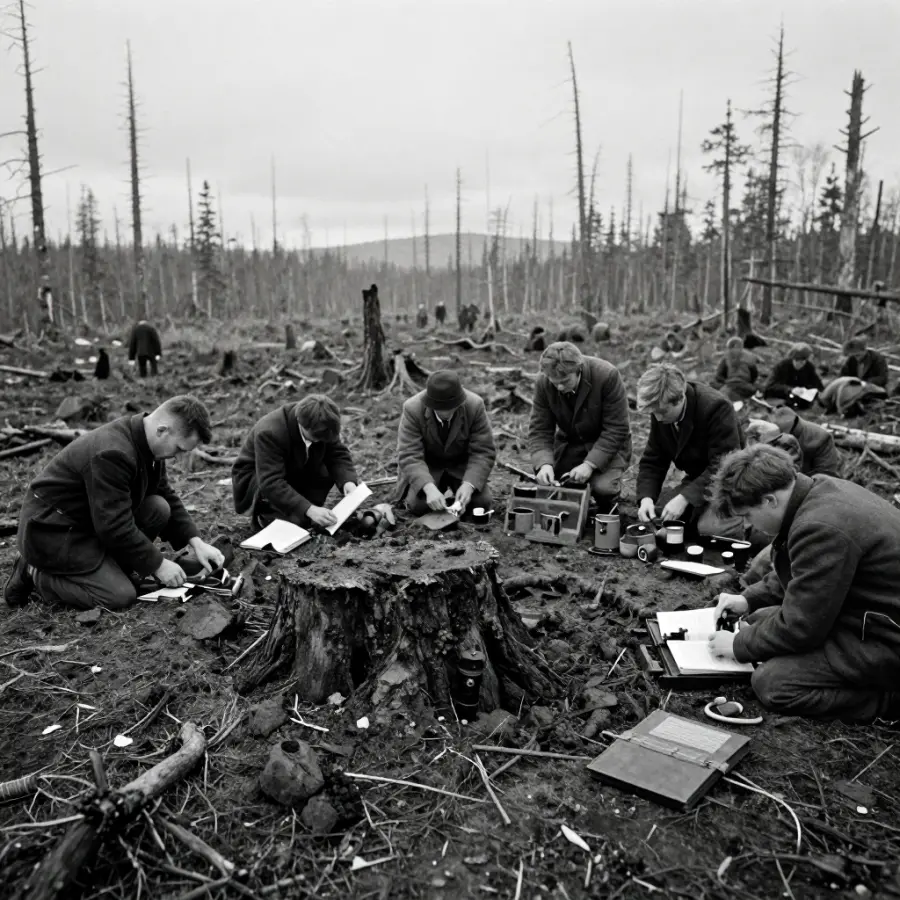

The Tunguska Event

The Tunguska explosion flattened 80 million trees across 800 square miles!
On the morning of June 30, 1908, something incredible happened in a remote corner of Siberia. A massive explosion shook the earth with the force of 1,000 Hiroshima atomic bombs. It flattened 80 million trees across 800 square miles - an area larger than some entire cities!
But here's the mystery: when scientists finally reached the site years later, they found no crater. Whatever caused this enormous blast had exploded in the air, not on the ground. What was it?
Overview
A Morning Like No Other
At 7:17 AM, people across Siberia witnessed something terrifying. A blinding fireball streaked across the sky, brighter than the sun. Then came the explosion:
- The blast was heard 600 miles away
- People were knocked off their feet 40 miles away
- Seismic waves were detected as far as England
- The night sky glowed brightly for days across Europe and Asia
💥 The Pressure Wave
The explosion was so powerful that barometers in England recorded the pressure wave - that's like feeling the air pressure change from an explosion on the other side of the world!
The Lucky Break

Witnesses described a fireball brighter than the sun streaking across the morning sky.
Here's the amazing thing: no one died in the Tunguska Event. Why? Because it happened in one of the most remote places on Earth!
The blast zone was deep in the Siberian wilderness, hundreds of miles from the nearest town. If the explosion had happened over a major city, it would have been one of the worst disasters in human history.
Evidence
Historical work on The Tunguska Event is strongest when primary records, material traces, and later peer-reviewed analysis point in the same direction. This layered approach helps separate observations from retellings and reduces the risk of repeating popular but unsupported claims.
The First Investigation

Leonid Kulik's 1927 expedition found millions of flattened trees but no impact crater.
Because the explosion happened in such a remote area, scientists didn't visit the site until 19 years later! In 1927, Russian scientist Leonid Kulik led the first expedition to the blast zone.
What he found was like something from another world: millions of trees lying flat, all pointing away from the center, like the spokes of a giant wheel.
🌌 Bright Nights
For several nights after the explosion, the sky over Europe was so bright that people in London could read newspapers at midnight without any artificial light!
Could It Happen Again?
The scary truth is: yes. Objects similar to the Tunguska meteoroid enter Earth's atmosphere regularly, but most burn up harmlessly or explode over the ocean.
Scientists around the world now track near-Earth objects to give us warning if something dangerous is heading our way.
Competing Explanations
Competing explanations usually persist because each one fits part of the evidence while missing another part. Researchers test these models against chronology, physical constraints, and independent documentation to identify which interpretation requires the fewest assumptions.
What Caused the Explosion?
Most scientists believe a meteoroid or comet entered Earth's atmosphere and exploded before hitting the ground. This object was probably:
- About 150-200 feet wide (the size of a 15-story building)
- Traveling at 33,500 miles per hour
- Weighed around 100 million tons
🌲 Standing Trees
Some trees at the very center of the blast zone were left standing - stripped of their branches but still upright. This pattern matches what happens during a nuclear explosion!
Open Questions
Open questions remain because source quality is uneven across time: some records are direct and detailed, while others are fragmentary or second-hand. Future archival discoveries, improved imaging, and more precise dating methods may refine conclusions without overturning well-supported core findings.
What We've Learned
- Space objects can cause enormous damage even without hitting the ground
- Earth is regularly bombarded by cosmic debris
- Remote locations are lucky - the same blast over a city would be catastrophic
- Science takes time - it took 19 years for the first investigation
The Tunguska Event remains one of the most powerful explosions in recorded history - a reminder that space can still surprise us!
📖 Recommended Reading
Want to learn more? Check out The Tunguska Event on Amazon for a deeper dive into this fascinating topic. (As an Amazon Associate, we earn from qualifying purchases.)
References & Further Reading
- NASA historical explainer on the 1908 Tunguska event
- NASA Earth Observatory: Tunguska overview and imagery
- Britannica: what is known vs not known
- Britannica facts summary
- Google Scholar literature search
Editorial note: this article reflects current mainstream interpretations while preserving open questions where evidence remains limited. See our Editorial Policy.